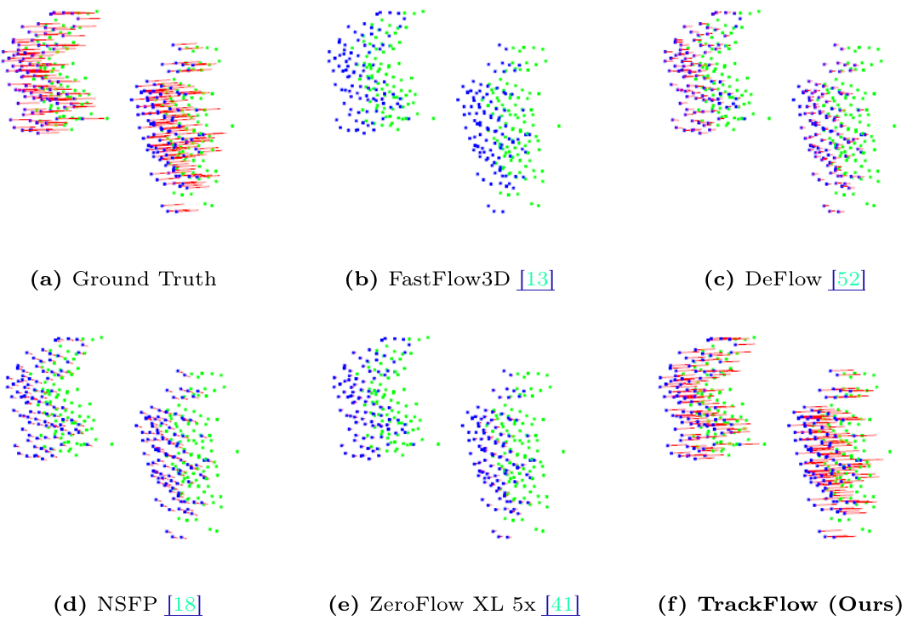

* Equal contributions
 We visualize a cherry picked example of two moving pedestrians (walking from left to right) with unusually high density lidar returns. We expect state-of-the-art scene flow methods would work well on this easy instance, but find that they fall short. Notably, our method TrackFlow is the only method to estimate proper flow for these pedestrians.
Current eval metrics (Average EPE, Threeway EPE) are reporting average error on the order of centimeters for state-of-the-art methods; new papers push these errors down by small fractions of a centimeters. These metrics are not informative — due to point imbalances, minor improvements on car motion estimation improves the metric by a significant amount, while major failures on small objects are treated as a rounding error.
We propose a new evaluation protocol, Bucket Normalized EPE, that is class-aware and speed-normalized. Class-awareness allows us to break down the object distribution into meaningful subsets, and speed normalization allows us to measure percentage of motion described rather than metric space error, enabling meaningful comparisons between cars moving at high speeds and pedestrians moving at walking speeds.
Bucket Normalized EPE allows us to quantify the systematic failures of current scene flow methods on small objects.
 A collection of state-of-the-art supervised and unsupervised scene flow
estimation methods on Argoverse 2’s test split. Supervised
methods shown with hatching. Lower is better. Notably,
existing methods, supervised or unsupervised, fail to describe more than
50% of pedestrian motion (have
A collection of state-of-the-art supervised and unsupervised scene flow
estimation methods on Argoverse 2’s test split. Supervised
methods shown with hatching. Lower is better. Notably,
existing methods, supervised or unsupervised, fail to describe more than
50% of pedestrian motion (have >0.5 Dynamic Normalized
EPE), highlighting the enormity of the failure of current methods.
We propose a simple supervised scene flow baseline, TrackFlow, built by bolting a high-quality pretrained detector (trained using many class rebalancing techniques) onto a simple tracker. Despite this awkward formulation, TrackFlow not only produces state-of-the-art performance on current standard evaluations, it provides enormous improvements over prior art on our new evaluation (e.g. describing almost 60% of pedestrian motion). TrackFlow is as much a call to action as it is a method: such a simple, cobbled together baseline thoroughly beating other (supervised!) methods means the scene flow community needs to go back to basics.
Scene flow as a problem is not an end unto itself; it is only useful as a primitive for downstream tasks. Those tasks care about error across all moving objects, and method evaluations that actively hide failures on small objects are not just, not useful, they are actively deceptive, wasting practitioners time as they try to sort through published methods to find something that actually works.
We provide a very easy-to-use, multi-dataset dataloader and scene flow evaluation toolkit for Bucket Normalized EPE, and we have integrated it into our Scene Flow Zoo as the standard method for evaluation. While we have provided these tools, the community must use them if we are to make real progress on scene flow. And don’t be fooled, there’s plenty left to do.
@inproceedings{khatri2024trackflow,
author = {Khatri, Ishan and Vedder, Kyle and Peri, Neehar and Ramanan, Deva and Hays, James},
title = {{I Can't Believe It's Not Scene Flow!}},
journal = {European Conference on Computer Vision (ECCV)},
year = {2024},
pdf = {https://arxiv.org/abs/2403.04739},
website = {http://vedder.io/trackflow.html}
}